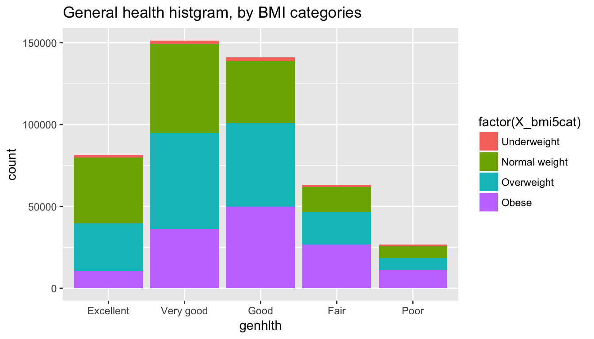
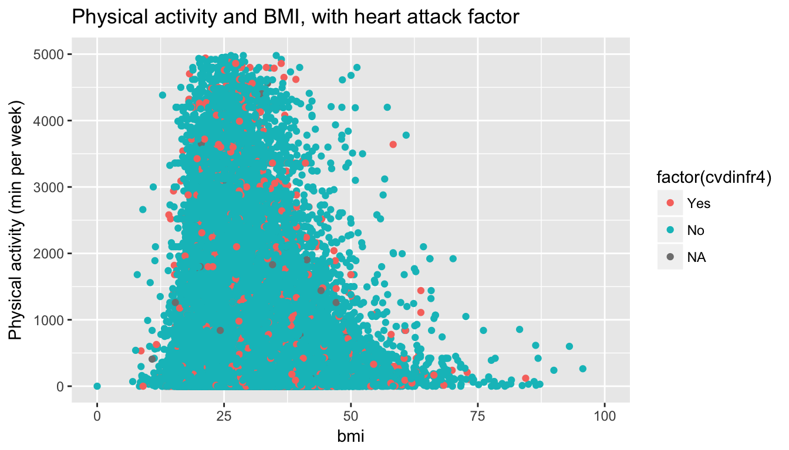

library(ggplot2)
library(dplyr)## Warning: package 'dplyr' was built under R version 3.4.2require(googleVis)
op <- options(gvis.plot.tag='chart')load("brfss2013.RData")
data <- brfss2013As our data is collected among 50 states of the United States of America (since 2001), we can generalize to the general American population. We can discuss about the differences that can be observated with other populations, like rate of smokers or obesity which can differ on a developping country for example. Note that our sample have observations from 2013 to 2014 so we can’t explore long time variation of the different variables.
Also the telephonic interviews can not be assumed like a randomisation, so conducting a randomised study about this theme may improve the quality of evidences, but it may be hard to do in reality.
Effect of the obesity on people feelings about their general health:
Observation of the BMI versus physical activity, and distribution of heart attack in the population:
Mapping of binge drinking versus average alcoholic drinks:
Effect of the obesity on people feelings about their general health:
data1 <- data %>%
filter(!is.na(X_bmi5cat)) %>%
filter(!is.na(genhlth))
qplot(genhlth, fill=factor(X_bmi5cat), data=data1, main="General health histgram, by BMI categories")
The genhlth factor was a question asked to people how good do their health feel. It seems that obese people feel slightly well. The peak is at good instead of very good.
data1 <- filter(data1, as.numeric(X_bmi5cat) == 4)
hlth <- summary(data1$genhlth)
print(hlth)## Excellent Very good Good Fair Poor
## 10654 36022 49804 26741 11065sum(as.numeric(hlth)[1:3])/sum(as.numeric(hlth))## [1] 0.7184666We can also note that 71.8% of obese people feel their general health is Good, Very Good or Excellent.
Observation of the BMI versus physical activity, and distribution of heart attack in the population:
#correct the 2 decimal implied
data2 <- mutate(data, bmi = (wtkg3/100)/(htm4/100)^2)
qplot(x=bmi, y=pa1min_, data=data2, xlim=c(0,100), ylim=c(0,5000),
color=factor(cvdinfr4), main="Physical activity and BMI, with heart attack factor", ylab="Physical activity (min per week)")## Warning: Removed 179817 rows containing missing values (geom_point).
We can observe a decrease of the physical activity starting around a BMI of 35, and the heart attack survivors seems equally distributed.
Mapping of binge drinking versus average alcoholic drinks:
data3 <- data %>%
select(X_state, drnk3ge5, avedrnk2) %>%
group_by(X_state) %>%
summarize(mean(drnk3ge5, na.rm=TRUE), mean(avedrnk2, na.rm=TRUE))
names(data3) <- c("state", "drink_ave", "binge")
data3 <- data3[order(data3$drink_ave, decreasing=TRUE),]
data3$state <- ordered(data3$state)
data4 <- data3[order(data3$binge, decreasing=TRUE),]
table(data3$state[1:10] %in% data4$state[1:10])##
## FALSE TRUE
## 2 8We can see that 8 out of 10 states on our top tens (for binge and average drinking) are the same.
Here is our top five for both :
#Top five for average drinking
data3[1:5,1:2]## # A tibble: 5 x 2
## state drink_ave
## <ord> <dbl>
## 1 Guam 2.192837
## 2 Puerto Rico 1.624349
## 3 Utah 1.596931
## 4 Hawaii 1.589777
## 5 West Virginia 1.499725#Top five for binge drinking
data4[1:5, c(1,3)]## # A tibble: 5 x 2
## state binge
## <ord> <dbl>
## 1 Puerto Rico 4.657199
## 2 Guam 3.710598
## 3 Hawaii 2.705577
## 4 Utah 2.623815
## 5 West Virginia 2.500000The same 5 states are leaders in average and binge drinking.
g1 <- gvisGeoChart(data3, locationvar="state", colorvar="binge", options=list(region="US", displayMode="regions", resolution="provinces", title="Binge drinking in the US"))
g2 <- gvisGeoChart(data4, locationvar="state", colorvar="drink_ave", options=list(region="US", displayMode="regions", resolution="provinces", title="Average drinking in the US"))
plot(gvisMerge(g1, g2))|
|
|
|
#First plot about Binge drinking and second for average drinking in the USWe can see that the two maps looks similar, and the states with most average drinking are also the states with most binge drinking.